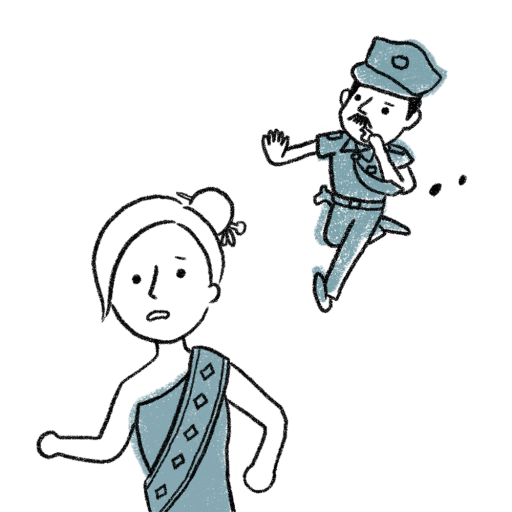
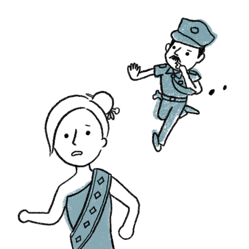

新住民人口在2015年已突破50萬，是台灣的重要族群。然而你可能不知道，有21國準備嫁來台灣的新移民，不僅要向審查員招供私密問題、保證婚姻幸福，而後過了重重難關拿到國籍，也可能因婚姻不順或意外被撤銷，成為無家可歸的國際人球⋯⋯現在讓我們一探究竟，哪些惡法促成這些人倫慘劇，又該如何阻止？


三年前，越南籍的小美來台當移工，認識了台灣人小明。兩人日久生情，小美結束工作返越後，兩人萌生在台共組家庭的念頭。
沒想到小美的移工身分，竟成為他們在入境結婚前「境外面談」的阻礙。為了確定兩人在越南婚姻的真實性，除了被迫回答夫妻間私密問題，也因生活瑣事問答的陳述不一，遭外交部駁回，導致小明在兩國來回奔波多年，因他們未能在台正式定居。
境外面談僅限21國

一般歐美或日本配偶，只要申請母國單身證明，經外館驗證就能來台辦理結婚。但外交部為了防制人口販運和假結婚等原因，對21國特設境外面談關卡，實屬歧視。
名單：蒙古、哈薩克、白俄羅斯、烏克蘭、烏茲別克、巴基斯坦、尼泊爾、不丹、印度、孟加拉、緬甸、塞內加爾、迦納、奈及利亞、喀麥隆、越南、菲律賓、泰國、斯里蘭卡、印尼、柬埔寨。
一視同仁

外交部特別標明21國，明顯為貶抑這些國家而訂定歧視性政策，背後邏輯假設他們為「假結婚嫌疑犯」，標籤化他國人民。設置境外面談制度，應當對所有外國移民一視同仁，並明定客觀面談規章，而非由非專業人士自行提問侵犯隱私之問題。
 

今年29歲的小芳，是嫁來台灣7年的印尼姑娘，與台南人先生擁有一雙可愛子女。去年初，她終於向外交部申請歸化成功，正式成為具台灣國籍的新住民。然而，上週小芳在騎機車上班途中，轉彎時不小心擦撞到一名騎車時速15公里的老奶奶，讓老奶奶嚴重骨折，而她被判為過失傷害罪。
不久後，小芳接到通知，由於她的微罪已觸犯《國籍法》第3條「無不良素行」歸化要件，因為在歸化成功後五年內違法，會被撤銷國籍，小芳便失去了台灣公民身份，也因她早已放棄印尼國籍，此時的小芳便淪為悲慘的國際人球。
素行不良定義模糊

依《國籍法》第3條，新住民歸化要件三：「無不良素行，且無警察刑事紀錄證明之刑事案件紀錄。」「不良素行」不僅定義模糊，並將許多微小行為如未盡撫養義務等，都納入規定範圍，一旦違反就不許歸化，甚至有些新移民因夫妻爭吵被舉報假結婚，也會被撤銷國籍，淪為無國籍者。

家暴離婚被迫回國

依現行《入出國及移民法》第31條，新移民配偶遭家暴離婚而無未成年子女監護權時，居留期滿就必須離境；即使取得子女監護權，只要沒有歸化成功或取得永久居留身分，也只能合法在台居留到子女20歲。
家暴離婚被迫回國
依現行《入出國及移民法》第31條，新移民配偶遭家暴離婚而無未成年子女監護權時，居留期滿就必須離境；即使取得子女監護權，只要沒有歸化成功或取得永久居留身分，也只能合法在台居留到子女20歲。
取得監護權困難重重
收入不足

無工作
然而，取得子女監護權對新移民配偶來說困難重重。因為若其沒有謀生能力，或收入不足以支付保母費時，法官不會將監護權判給新移民配偶。若被遣送回國，離婚的新住民配偶只能定期來台探訪子女。


放寬離婚新移民配偶的居留權條件，若其取得子女監護權，不限制其只能合法在台居留到子女20歲便須備遣送回國。